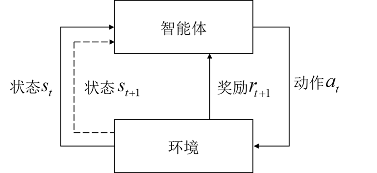
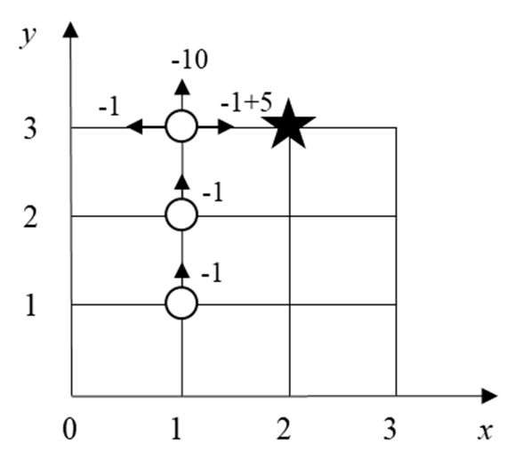
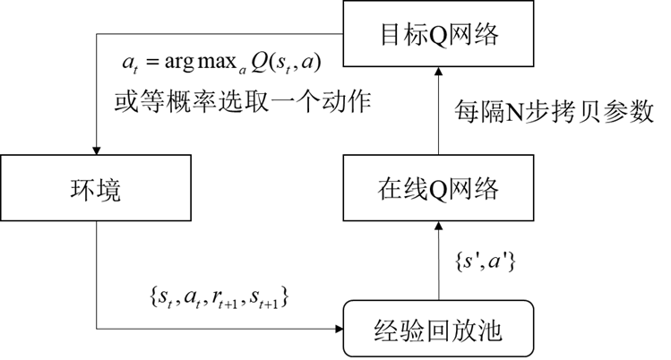
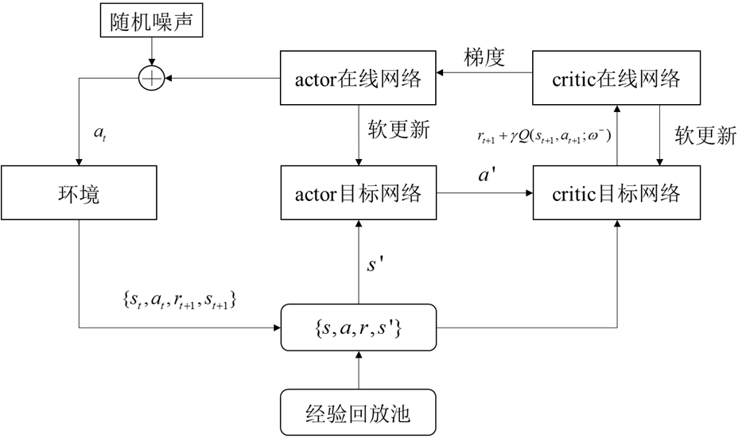
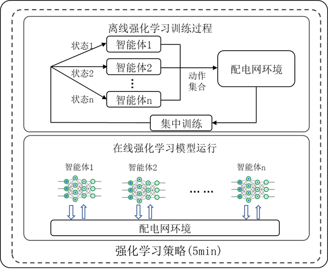
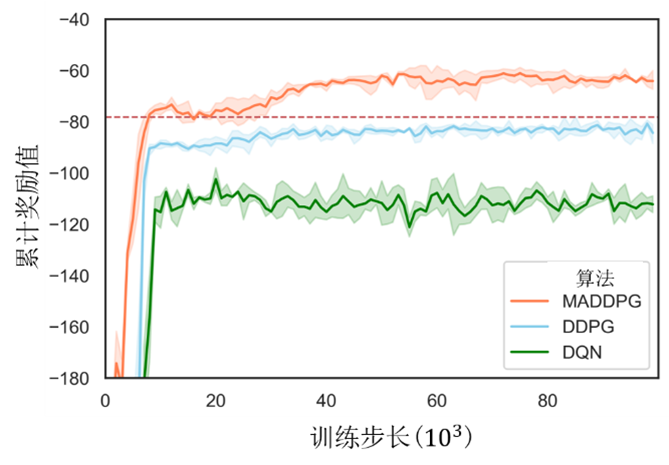

LECTURE 9
第九讲 强化学习
从马尔可夫决策过程到深度强化学习与连续控制应用
原课件第八章 · PPT 第 1–62 页
核心应用：智能电网无功优化 · 四足机器人速度跟踪行走
PPT 第 2 页
讲义导览
- 引言——关键要素 · 交互原理 · 多臂赌博机 · 马尔可夫决策过程
- 强化学习方法——价值函数 · 策略梯度 · Actor–Critic · DQN · DDPG
- 深度强化学习在智能电网中的应用——无功优化 · 状态动作奖励 · 离线训练在线执行
- 强化学习在四足机器人行走中的应用——连续控制 · PPO · 奖励设计 · 仿真到现实
PPT 第 3–13 页
一、引言
PPT 第 3 页
1.1 强化学习的基本思想
- 强化学习是机器学习的重要分支，更关注通过与环境交互学习序贯决策；深度神经网络也可作为强化学习的函数逼近工具，二者结合形成深度强化学习。
- 强化学习最初被用于解决最优控制问题，其范式近似于动态规划方法，“试错学习”是其最显著的特征之一。
PPT 第 4 页
1.2 强化学习的五大关键要素
PPT 第 5 页
1.3 强化学习的基本原理
智能体采取动作导致环境状态变化，环境产生新的状态并随之计算出相应的奖励反馈给智能体，智能体根据获得奖励高低优化自身的动作，最终获得在各种状态下采取动作的“策略”。

智能体与环境的交互闭环：状态、动作与奖励（PPT 第 5 页）
PPT 第 6 页
1.4 多臂赌博机问题
由多臂赌博机问题（Multi-armed Bandits）进一步认识强化学习：
$p_1$ $p_2$ …… $p_k$
存在 $k$ 个赌博机，每次只能按下一个赌博机的摇臂，该赌博机有 $p_i$ 的概率吐出 1 枚金币，采取什么样的策略，可以使得玩家获得最多的金币？
PPT 第 7 页
1.5 赌博机概率未知时的策略
假如各个赌博机的概率 $p$ 已知，只需要找到概率最高的赌博机反复拉动，就可以获得最多的金币；若赌博机的概率未知，采取什么策略？
- 每个都拉动一遍
- 随机选择一些赌博机拉动
- 反复拉动，观察哪台机器产出的奖励较多
- ……
难点多臂赌博机问题的难点在于：无法得知确切的 $p$。
PPT 第 8 页
1.6 多臂赌博机的强化学习条件
多臂赌博机属于典型的强化学习问题，其满足以下条件：
- 每次选择赌博机的行为是独立的
- 不同动作会产生不同的回报
- 可以根据回报去优化选择赌博机的策略
- 最终目标是获得最高的总回报
一种求解思想在不断地尝试中估计赌博机的概率 $p$，并选择当前认为概率最高的赌博机。
PPT 第 9 页
1.7 有限马尔可夫决策过程
这个过程的数学形式，也被称为有限马尔可夫决策过程，同时也是强化学习问题的重要描述方法。
在状态 $s$ 时，智能体采取动作 $a$ 使得环境状态变化为 $s'$，同时反馈给智能体奖励 $r$，该过程即完成智能体与环境一次交互学习。
环境的变化与环境自身特性以及动作有关，可以写作条件概率的形式 $p(s',r|s,a)$，指代在状态 $s$ 下，采用动作 $a$ 使得环境状态改变为 $s'$ 并获得奖励 $r$ 的概率。
智能体的目标是最大化未来折扣回报的期望。从时刻 $t$ 开始的回报定义为：
\[
G_t=r_{t+1}+\gamma r_{t+2}+\gamma^2r_{t+3}+\cdots
=\sum_{k=0}^{\infty}\gamma^k r_{t+k+1}
\]
其中，$\gamma\in[0,1]$ 为折扣因子；有限幕任务可在终止状态处结束求和。
PPT 第 10 页
1.8 机器人路径问题
由机器人路径问题理解马尔可夫决策过程：

机器人路径问题：在未知环境中通过交互寻找最短路径（PPT 第 10 页）
- 机器人事先不知终点在何处，需要“碰壁”寻找
- 每一次可以采取前后左右前进一步动作之一
- 目标是找到到达目的地的最短路径
想一想怎么定义状态、回报最为合理？
PPT 第 11 页
1.9 机器人路径问题：状态与奖励
沿用机器人路径问题示意图分析状态与奖励（PPT 第 11 页）
- 状态需要反映动作的结果。
不妨用机器人行动一次以后坐标作为状态。
- 奖励需要贴合控制的目标，但不一定要符合数学模型。
到达终点给予奖励，撞墙则给予惩罚，为了使机器人最短路径可设置每走一步均给予惩罚。
思考能否全部设置为正向奖励，以数值区分？
PPT 第 12 页
1.10 机器人路径问题的马尔可夫决策过程
机器人路径问题与其状态转移描述（PPT 第 12 页）
马尔可夫决策过程完整描述了机器人路径问题，而强化学习方法正是用于求解马尔可夫决策过程的重要工具。
PPT 第 13 页
1.11 回顾与交互学习策略
- 回顾多臂赌博机与机器人路径规划问题，应当如何求解这两种问题？
- 两种问题的特点在于，需要在交互过程中寻找最优解，因此强化学习需要解决：以什么样的“策略”进行交互学习，以得到最优解。
PPT 第 14–36 页
二、强化学习方法
PPT 第 15 页
2.1 基于价值函数：策略与价值
基于价值函数的强化学习方法涉及两类关键概念：策略与价值、“探索”与“利用”（exploration and exploitation）。
- 策略：智能体采取动作的方式，比如贪心地选取动作，或者随机选取动作，可以描述成概率形式。
- 价值：状态或状态—动作对所带来的未来期望回报，可以评估其“优劣”，分别用状态价值函数 $v_\pi$ 和动作价值函数 $q_\pi$ 描述。
\[
v_\pi(s)=\mathbb{E}_\pi[G_t\mid s_t=s]
\]
\[
q_\pi(s,a)=\mathbb{E}_\pi[G_t\mid s_t=s,a_t=a]
\]
PPT 第 16 页
2.2 价值函数方法：评估与改进
价值函数方法的核心：在交互式学习中评估状态、动作价值，并依据价值合理的选取动作，即得到最优策略。
这与解决多臂赌博机问题时的思想相似。这两点在强化学习方法中是同时进行的，即按照某个策略先进行试探，并根据反馈不断改进策略。
PPT 第 17 页
2.3 蒙特卡洛方法
策略评估
蒙特卡洛方法利用完整一幕的实际回报估计价值，一种常见的常数步长更新形式为：
\[
v_\pi(s_t)\leftarrow v_\pi(s_t)+\alpha\left[G_t-v_\pi(s_t)\right]
\]
蒙特卡洛方法基于大数定律。在策略稳定、状态被充分访问等适当条件下，随着试验次数增加，样本平均回报可收敛到真实价值。与逐步更新的时序差分方法不同，蒙特卡洛方法通常要等到一幕结束后，才能利用完整回报更新该幕中访问过的状态价值。
策略改进
随着策略评估逐渐变得更为“准确”，不断地更新策略即可。一般的强化学习方法均采用基本的贪心策略或 $\varepsilon$-贪心策略。
PPT 第 18 页
2.4 时序差分方法
策略评估
评估某一策略下的状态价值和动作价值。以状态价值的单步 TD(0) 更新为例：
\[
v_\pi(s_t)\leftarrow v_\pi(s_t)+\alpha\left[r_{t+1}+\gamma v_\pi(s_{t+1})-v_\pi(s_t)\right]
\]
时序差分方法用单步实际奖励与下一状态价值估计构造 TD 目标，而不必等待完整一幕结束；其显著特点是利用当前价值估计进行自举，每一步都可以更新价值函数。
策略改进
根据策略改进定理，对当前动作价值函数采取贪心策略，可保证新策略不差于原策略；若在至少一个状态上取得严格改进，则新策略严格优于原策略。时序差分方法可在交互过程中交替进行策略评估与策略改进。
PPT 第 19 页
2.5 Sarsa 方法
\[
q_\pi(s_t,a_t)\leftarrow q_\pi(s_t,a_t)+\alpha\left[r_{t+1}+\gamma q_\pi(s_{t+1},a_{t+1})-q_\pi(s_t,a_t)\right]
\]
Sarsa 是典型的同策略（on-policy，亦称在线策略）时序差分方法，名称来自一次更新所使用的五元组：状态—动作—奖励—下一状态—下一动作（State–Action–Reward–State–Action）。它可采用 $\varepsilon$-贪心方法作为行为策略，即以 $1-\varepsilon$ 的概率选择当前动作价值最高的动作，以 $\varepsilon$ 的概率随机选择动作。
Sarsa 通过交互试验评估实际执行策略的动作价值，并基于策略改进思想更新同一策略。
注意若始终采用固定的 $\varepsilon$-贪心策略，持续随机探索会妨碍收敛到确定性最优策略。要收敛到最优策略，通常需要让 $\varepsilon$ 按合适方式逐渐衰减，并满足相应的探索与步长条件。
PPT 第 20 页
2.6 Q 学习方法
\[
Q(s_t,a_t)\leftarrow Q(s_t,a_t)+\alpha\left[r_{t+1}+\gamma\max_{a'}Q(s_{t+1},a')-Q(s_t,a_t)\right]
\]
Q 学习是最经典的强化学习方法之一，属于异策略（off-policy，亦称离线策略）方法。智能体可以按照 $\varepsilon$-贪心等行为策略与环境交互，但目标策略的更新直接使用下一状态的最大动作价值，而不依赖实际执行的下一动作 $a_{t+1}$。这使其能够学习独立于行为策略的最优动作价值函数。
Q 学习方法是众多强化学习方法的基础。
PPT 第 21 页
2.7 策略梯度方法
策略梯度是不同于价值函数方法的另一类强化学习方法。它将策略直接参数化，并优化与期望回报相关的性能指标；通常沿性能指标的梯度上升方向更新策略，也可等价地对负性能指标进行梯度下降。
本质思想期望回报取决于状态与动作序列，而这些序列的分布又受到参数化策略的影响，因此可以直接将策略性能表示为策略参数的函数并优化。
策略的参数化：
\[
\pi(a\mid s,\theta)
\]
策略可以采用函数拟合的方式参数化，描述了在状态和采取动作之间的对应关系。
PPT 第 22 页
2.8 策略梯度定理
策略梯度定理将参数化策略的梯度与评价策略好坏的性能指标的梯度相联系，同时指出二者成正比例关系。
- 性能指标：评价策略好坏的指标，可以定义为初始状态的状态价值函数 $J(\theta)=v_{\pi_\theta}(s_0)$，从而反映长期回报最大化目标。
- 策略梯度定理：性能指标对策略参数的梯度，可表示为按状态分布与动作价值加权的策略梯度求和（相差一个与具体设定有关的比例系数）。
\[
\nabla_\theta J(\theta)
\propto\sum_s\mu(s)\sum_a q_{\pi_\theta}(s,a)\,
\nabla_\theta\pi_\theta(a\mid s)
\]
PPT 第 23 页
2.9 REINFORCE 方法
基于策略梯度定理，沿策略梯度的正向更新策略参数，可改进性能指标。据此得到 REINFORCE 方法：
\[
\theta_{t+1}=\theta_t+\alpha G_t
\frac{\nabla_\theta\pi(a_t\mid s_t,\theta_t)}
{\pi(a_t\mid s_t,\theta_t)}
=\theta_t+\alpha G_t\nabla_\theta\ln\pi(a_t\mid s_t,\theta_t)
\]
REINFORCE 方法中，策略梯度是使用一幕的回报来估计的，这一点类似于价值函数方法中的蒙特卡洛方法。上式的增量式更新，使得策略参数沿着梯度方向增加，更新大小与回报成正比，与选择该动作的概率成反比。该更新方式既使参数向更有利于产生最高回报的动作的方向更新，又避免了频繁被选择的动作占据优势地位。
PPT 第 24 页
2.10 Actor–Critic（AC）方法
将时序差分思想引入 REINFORCE 方法，用 TD 误差代替完整回报，即得到行动器·评判器方法。令
\[
\delta_t=r_{t+1}+\gamma v(s_{t+1};w_t)-v(s_t;w_t)
\]
则一种基本的 Actor 更新形式为：
\[
\theta_{t+1}=\theta_t+\alpha\delta_t
\frac{\nabla_\theta\pi(a_t\mid s_t,\theta_t)}
{\pi(a_t\mid s_t,\theta_t)}
\]
AC 方法中，不仅需要计算策略梯度，还需要计算状态价值函数，因此是一种结合了策略梯度以及价值函数的方法，是如今强化学习方法中的主流方法。
Actor–Critic 方法的基本结构与交互关系（PPT 第 24 页）
PPT 第 25 页
2.11 AC 方法的价值函数参数化
由于存在价值函数，需要进行类似于价值函数方法中的策略评估。AC 方法中的价值函数也采用参数化形式 $v(s;w)$，Critic 可使用半梯度 TD 方法更新：
\[
w_{t+1}=w_t+\alpha'\delta_t\nabla_w v(s_t;w_t)
\]
其中：
\[
\delta_t=r_{t+1}+\gamma v(s_{t+1};w_t)-v(s_t;w_t)
\]
策略梯度方法通过参数化策略直接表示动作分布或确定性动作，尤其适用于连续动作空间；计算动作时无需枚举所有动作的价值，只需根据当前策略参数生成动作。
PPT 第 26 页
2.12 深度强化学习方法
如何参数化策略或是价值函数？
- 参数化策略：使用可微函数表示动作分布或确定性动作。例如，对连续动作空间，可用高斯分布描述动作概率，并让分布参数由神经网络输出。
- 参数化价值函数：价值函数涉及到策略评估，价值函数本身旨在交互式学习中逐渐逼近真实价值，因此价值函数是基于交互数据对真实价值的拟合，参数化价值函数的本质是函数拟合。
函数逼近工具常用的强大函数逼近工具：深度神经网络。
PPT 第 27 页
2.13 深度 Q 学习（Deep Q Network）
深度 Q 网络（DQN）由谷歌 DeepMind 团队在 2015 年《自然》论文中系统提出，本质是利用深度神经网络逼近 Q 学习中的最优动作价值函数。
Q 学习的基本更新为：
\[
Q(s_t,a_t)\leftarrow Q(s_t,a_t)+\alpha\left[r_{t+1}+\gamma\max_{a'}Q(s_{t+1},a')-Q(s_t,a_t)\right]
\]
DQN 将动作价值函数参数化为 $Q(s,a;\theta)$，使用目标网络参数 $\theta^-$ 构造目标值，并以 TD 目标的均方误差作为损失函数：
\[
y=r+\gamma\max_{a'}Q(s',a';\theta^-)
\]
\[
L(\theta)=\mathbb{E}_{(s,a,r,s')\sim\mathcal D}
\left[\left(y-Q(s,a;\theta)\right)^2\right]
\]
其中，$\mathcal D$ 为经验回放池；对于终止状态，目标值中不应再加入下一状态价值项。
PPT 第 28 页
2.14 深度 Q 学习的实践困难
样本的时间相关性
深度学习通常假设训练样本近似独立同分布，而强化学习按时间顺序产生的相邻样本往往高度相关。
方法：经验回放池（experience replay）。
训练目标非平稳
若在线网络同时用于计算预测值和 TD 目标值，参数更新会使训练目标持续变化，容易造成训练振荡或发散。
方法：在线网络与目标网络组成的双网络机制。
经验回放与目标网络是 DQN 稳定训练的关键技术，也对后续深度强化学习方法产生了重要影响。
PPT 第 29 页
2.15 经验回放
经验回放：在每个时刻 $t$，将智能体与环境交互得到的状态转移序列存储下来，在每次训练时只从回放池抽取小批量的样本。
经验回放使原先的经验样本能够被重复利用，提高样本利用率；随机采样还能打破相邻样本的时间相关性，使训练数据更接近独立同分布假设，但不能保证样本在严格统计意义上相互独立。

经验回放：存储交互经验并随机采样用于训练（PPT 第 29 页）
PPT 第 30 页
2.16 双网络训练
双网络包括在线网络与目标网络，使得获得交互样本之后并非每次都更新目标网络的参数。
目标网络与在线网络的结构相同，但参数更新方式不同：在线网络在训练过程中持续更新；目标网络的参数则保持相对稳定，通常每隔一定训练步数从在线网络复制更新，而不是按环境交互次数直接更新。
方法归类深度 Q 学习仍然属于基于价值函数的方法。
在线网络与目标网络组成的双网络机制（PPT 第 30 页）
PPT 第 31 页
2.17 深度确定性策略梯度方法
深度确定性策略梯度方法（DDPG）将确定性策略梯度与深度神经网络相结合，并借鉴 DQN 的经验回放和目标网络机制，用 Actor 表示确定性策略、用 Critic 逼近动作价值函数，适用于连续动作控制。

DDPG 的总体结构与数据流（PPT 第 31 页）
PPT 第 32 页
2.18 DDPG 的 AC 网络
DDPG 属于典型的 AC 方法，包含 Actor 与 Critic 两类网络：Actor 参数化确定性策略，Critic 拟合动作价值函数。实际实现中，两类网络通常各有一个在线网络和一个目标网络，因此共有四个网络。
DDPG 的 Actor–Critic 四网络结构（PPT 第 32 页）
PPT 第 33 页
2.19 Actor 网络更新
DDPG 从经验回放池中抽取小批量样本，并采用梯度方法更新网络参数。
Actor 网络更新所涉及的策略与价值梯度路径（PPT 第 33 页）
Actor 网络根据确定性策略梯度与链式求导法则更新。设确定性动作为 $a=\pi(s;\theta)$，则：
\[
\nabla_\theta J(\theta)
\approx\mathbb{E}_{s\sim\mathcal D}
\left[
\left.\nabla_a Q(s,a;w)\right|_{a=\pi(s;\theta)}
\nabla_\theta\pi(s;\theta)
\right]
\]
实际训练通常沿该梯度的上升方向更新 Actor 参数。
PPT 第 34 页
2.20 Critic 网络更新
目标 Critic 网络与目标 Actor 网络共同用于计算相对稳定的 TD 目标；在线 Critic 网络则通过最小化 TD 误差进行训练，并非仅用于暂存参数和传递梯度。
Critic 网络更新所涉及的目标值计算与误差反传（PPT 第 34 页）
Critic 网络通过反向传播更新。对从经验回放池采样的 $N$ 个样本，目标值与均方误差损失可写为：
\[
y_t=r_{t+1}+\gamma Q\left(s_{t+1},\pi(s_{t+1};\theta^-);w^-\right)
\]
\[
L(w)=\frac{1}{N}\sum_t
\left[y_t-Q(s_t,a_t;w)\right]^2
\]
其中，下一状态动作由目标 Actor 网络给出。
PPT 第 35 页
2.21 目标网络软更新
DDPG 沿用了深度 Q 学习的双网络方法，一共包含 4 个网络，并采用软更新的方式更新目标网络的参数，比深度 Q 学习的一定步骤后拷贝更新（硬更新）更灵活。
DDPG 目标 Actor 与目标 Critic 参数的软更新（PPT 第 35 页）
软更新分别以较小的比例 $\tau$ 向在线参数靠近，Actor 与 Critic 的目标参数更新为：
\[
\theta^-\leftarrow\tau\theta+(1-\tau)\theta^-
\]
\[
w^-\leftarrow\tau w+(1-\tau)w^-
\]
其中，$0<\tau\leq1$，通常取 $\tau\ll1$；$\theta,w$ 为在线参数，$\theta^-,w^-$ 为目标参数。
PPT 第 36 页
2.22 深度强化学习方法的优势
- 得益于深度学习的函数逼近能力，深度强化学习可处理高维、连续状态空间；其中，策略梯度和 Actor–Critic 等方法也适用于连续动作空间。
- 许多无模型深度强化学习方法可将交互样本与决策学习直接关联，在不依赖精确数学物理模型的情况下学习控制策略，但通常仍需要可靠的仿真环境或高质量交互数据。
PPT 第 37–50 页
三、深度强化学习在智能电网中的应用
PPT 第 38 页
3.1 智能电网与关键挑战
什么是智能电网？智能电网是在传统电力系统基础上，通过集成新能源、新材料、新设备和先进传感技术、信息技术、控制技术、储能技术等新技术，形成的新一代电力系统，具有高度信息化、自动化、互动化等特征，可以更好地实现电网安全、可靠、经济、高效运行。
关键挑战
海量的数据和多元化的主体导致传统电力系统建模受阻，传统运行优化方法受限，且数据价值利用不充分、不全面。
3.2 人工智能技术在电力系统中的应用
人工智能——研究、开发用于模拟、延伸和扩展人的智能的理论、方法、技术及应用系统的一门新的技术科学，包括：计算机视觉、自然语言处理、规划决策系统等。
电力系统如何应用人工智能技术？
- 故障处理、定位
- 监控图像识别
- 分布式电源调控
- 系统调度、能量管理
- ……
PPT 第 40 页
3.3 深度强化学习技术能做什么
深度强化学习是一种基于数据样本的决策支持技术。
优势
训练完成后的在线推理通常较快；无模型方法可不依赖精确物理模型进行策略学习。
劣势
可靠性、安全性和可解释性保障不足，收敛性、泛化性及约束满足通常缺乏严格保证。
挑战
训练样本与计算开销大，高质量数据获取困难，高维状态与动作空间会进一步增加学习难度。
PPT 第 41 页
3.4 无功优化问题举例
利用深度强化学习尝试解决电力系统无功优化问题。
配电网无功优化的目标是在充分满足电网安全运行约束的前提下，调节相关的无功补偿设备和分布式电源，有效维持各节点电压稳定，减轻电压波动并降低电网网损。
该问题通常可建模为包含离散变量、连续变量和复杂约束的混合整数非线性非凸优化问题。
PPT 第 42 页
3.5 配电网无功优化数学模型
\[
\min F=c_{\mathrm{loss}}P_{\mathrm{loss}}+c_{\beta}\mathrm{VVR}
\]
\[
\mathrm{VVR}
=\sum_{j,t}\left[
\operatorname{ReLU}^{2}(\underline{V}-V_{j,t})
+\operatorname{ReLU}^{2}(V_{j,t}-\overline{V})
\right]
\]
其中，$\underline V$ 和 $\overline V$ 分别为节点电压下限与上限；当电压处于允许范围内时，两项越限惩罚均为零。
无功优化的主要目标是降低网损成本，同时对电压越限进行惩罚；通过权重系数将两项合并后，属于对多目标问题的加权标量化处理。
PPT 第 43 页
3.6 配电网潮流模型
无功优化的下层约束是配电网潮流模型，潮流模型属于非线性非凸约束，不容易快速求解。
有功
\[
P_{\mathrm{DG},j}-P_{\mathrm{L},j}
=\sum_{v\in j}\left(p_{jv}+\ell_{jv}r_{jv}\right)-\sum_{i\in j}p_{ij}
\]
无功
\[
Q_{\mathrm{VVE},j}+Q_{\mathrm{DG},j}-Q_{\mathrm{L},j}
=\sum_{v\in j}\left(q_{jv}+\ell_{jv}x_{jv}\right)-\sum_{i\in j}q_{ij}
\]
其中，$\ell_{jv}=|I_{jv}|^2$ 表示支路电流幅值的平方，因此支路损耗项分别为 $\ell_{jv}r_{jv}$ 和 $\ell_{jv}x_{jv}$。若直接用电流幅值 $I_{jv}$ 表示，则对应项应写为 $|I_{jv}|^2r_{jv}$ 和 $|I_{jv}|^2x_{jv}$，不能遗漏平方。
PPT 第 44 页
3.7 强化学习解决实际问题的方法论
- 定义五要素
智能体、环境、状态、动作、奖励。
- 建立马尔可夫决策过程
奖励函数设计、状态转移关系。
- 提出合适的强化学习算法求解
多智能体强化学习、约束性强化学习、联邦强化学习等。
PPT 第 45 页
3.8 无功优化的强化学习要素
- 优化对象：网损与节点电压。其中，节点电压等信息可构成状态，网损和电压越限程度可用于构造奖励。
- 参与设备：电容器、逆变器、变压器。智能体是执行调控决策的控制器，可按设备或区域设置为单智能体或多智能体，设备本身则是被控对象。
- 奖励设计依据：最小化网损，缓解节点电压越限。
- 调控行为（动作）：电容器投切、逆变器无功功率调节、变压器分接头挡位调节。
PPT 第 46 页
3.9 状态、动作与奖励
状态：节点电压
\[
s_{m,t}=[V_{1,t},V_{2,t},\ldots,V_{j,t}]
\]
动作：调压装置动作
\[
a=[a_{1,t},a_{2,t},\ldots,a_{j,t}]
\]
奖励：
\[
r=-F
\]
强化学习始终以最大化奖励为目标，而无功优化的目标是最小化网损和电压偏差，要取负值。
思考若优化问题是最大化目标 $F$，通常可取 $r=F$。关键在于奖励增长方向应与优化目标一致，而不是简单判断奖励应取正值还是负值。
PPT 第 47 页
3.10 离线训练与在线执行

配电网无功优化的“离线训练、在线执行”框架（PPT 第 47 页）
交互过程：调节智能体进行动作使得配电网电压网损改变，并由此计算奖励，反馈智能体优化其动作。
实际配电网通常不允许智能体执行不受约束的试探性动作，因此常采用“离线训练、在线执行”的框架，并在仿真环境或安全约束机制下完成探索。
在线优势与前提训练完成后，在线执行阶段可根据实时量测直接输出决策，通常无需在线显式求解潮流。需要注意，离线训练仍需要可靠的潮流仿真环境或高质量历史数据，并对策略的安全性和泛化能力进行验证。
PPT 第 48 页
3.11 强化学习训练过程与结果

强化学习训练曲线及探索与利用的变化（PPT 第 48 页）
- 训练前期通常以探索为主，随后逐步加强对已学策略的利用。
- 部分算法在训练过程中保留一定探索，探索强度是否及如何衰减取决于算法与训练安排。
- 对一般非线性、函数逼近或多智能体问题，强化学习通常不能保证获得全局最优解。
思考不同的强化学习方法怎么平衡“探索”与“利用”？
PPT 第 49 页
3.12 强化学习应用难点
从无功优化问题看强化学习应用难点：
- 泛化性不足
- 通常无法保证获得全局最优解
- 难以通过权重协调多目标优化
- 通常难以保证优化问题中的约束在所有情况下严格成立
- 样本需求量大、采集周期长且数据质量要求高
- 决策结果可解释性不高
PPT 第 50 页
3.13 讨论与总结
总结强化学习特点- 适合解决什么类型的问题？
- 强化学习为什么不够可靠？
- 强化学习的优势怎么体现？
- 强化学习存在哪些不足？
讨论哪些是可提升的，哪些是根本上无法改变的？
PPT 第 51–62 页
四、强化学习在四足机器人行走中的应用
PPT 第 52 页
4.1 四足机器人速度跟踪行走
给定前进速度、侧向速度和转向角速度指令，四足机器人通过调节 12 个关节电机，在平地或起伏地形上稳定行走，尽量跟踪速度指令、保持机身姿态、减少摔倒和能耗。
- 智能体：四足机器人运动控制器
- 环境：四足机器人本体 + 地形 + 外部扰动
- 被控对象：12 个关节电机，必要时包括足端与机身姿态
- 状态：机器人本体感知与地形感知信息
- 动作：关节目标位置、关节位置增量或关节力矩
- 奖励：速度跟踪、姿态稳定、足端接触合理、能耗低、动作平滑、避免摔倒
PPT 第 53 页
4.2 四足机器人行走的五要素
PPT 第 54 页
4.3 MDP 建模与状态设计
在状态 $s_t$ 下，智能体采取动作 $a_t$，环境转移到 $s_{t+1}$，并给出奖励 $r_{t+1}$。强化学习目标仍是最大化未来折扣回报：
\[
G_t=\sum_{k=0}^{\infty}\gamma^k r_{t+k+1}
\]
状态设计：本体感知 + 地形感知
\[
s_t=[v_x,v_y,\omega_z,\text{roll},\text{pitch},\text{yaw},
q_1,\dot q_1,\ldots,q_{12},\dot q_{12},
c_1,\ldots,c_4,h_{\text{terrain}},a_{t-1}]
\]
- $v_x,v_y,\omega_z$：机身线速度、角速度；
- roll、pitch、yaw：机身姿态；
- $q_i,\dot q_i$：12 个关节的角度与角速度；
- $c_i$：足端接触标志或接触力；
- $h_{\text{terrain}}$：地形高度图/扫描信息，仿真中可用，实物上可简化；
- $a_{t-1}$：上一时刻动作，用于平滑惩罚。
简化状态机身速度 + 姿态 + 12 个关节的角度与角速度 + 4 个足端接触 + 上一动作。
PPT 第 55 页
4.4 动作设计：位置增量与关节力矩
- 关节目标位置增量
\[
a_t=[\Delta q_1,\ldots,\Delta q_{12}]
\]
由底层 PD 控制器跟踪目标关节角，实际控制更稳定，适合仿真到实物。
- 关节力矩
\[
a_t=[\tau_1,\ldots,\tau_{12}]
\]
控制更直接，但学习难度和安全风险更高。
推荐结构关节目标位置增量 + PD 控制器——“策略输出高层动作，底层控制器保证执行”。
PPT 第 56 页
4.5 奖励设计：多目标加权
四足行走奖励通常是多目标加权：
\[
r_t=
w_v r_{\text{速度跟踪}}
+w_p r_{\text{姿态}}
+w_c r_{\text{足端接触}}
-w_{\tau}\|\tau\|^2
-w_{\Delta a}\|a_t-a_{t-1}\|^2
-w_{\text{fall}}p_{\text{fall}}
\]
PPT 第 57 页
4.6 奖励设计：跟踪、姿态与摔倒惩罚
一个简化示例：
\[
r_{\text{速度跟踪}}
=
\exp\left(
-\frac{(v_x-v_x^{\text{cmd}})^2+(v_y-v_y^{\text{cmd}})^2+(\omega_z-\omega_z^{\text{cmd}})^2}{\sigma}
\right)
\]
姿态稳定奖励可写为：
\[
r_{\text{姿态}}
=-\left(\text{roll}^2+\text{pitch}^2\right)
\]
摔倒或机身过低时，可施加正的惩罚量并终止当前一幕：
\[
p_{\text{fall}}=C_{\text{fall}}>0
\]
设计原则奖励增长方向要与优化目标一致。奖励设计不是简单把所有项都设为正值，而是通过速度跟踪项鼓励前进，以姿态、能耗、动作变化和摔倒等惩罚项约束行为。
PPT 第 58 页
4.7 算法选择：PPO、SAC 与 DDPG/TD3
四足行走是典型的高维连续动作控制问题：
本讲示例：PPOPPO 属于策略梯度/Actor–Critic 类方法，适合连续动作空间；通过并行仿真采集大量行走样本，利用裁剪目标限制策略更新幅度，提高训练稳定性。
PPT 第 59 页
4.8 离线训练与在线执行
和智能电网无功优化类似，四足机器人也适合“离线训练、在线执行”：
PPT 第 60 页
4.9 交互过程、在线优势与安全验证
交互过程控制器根据机器人状态输出关节动作，机器人运动后状态改变并产生奖励，奖励反馈给智能体用于更新策略；训练完成后，在线阶段根据实时量测直接输出行走控制指令。
优势：在线推理快，无需在线求解复杂步态规划或全身动力学优化。
注意
离线训练仍依赖可靠仿真环境或高质量数据，且必须验证安全性和泛化能力。
4.10 四足机器人强化学习的应用难点
- 仿真到现实差距：电机模型、摩擦、延迟、传感器噪声、地形差异导致 sim2real 困难；
- 泛化性不足：训练地形与真实地形不一致时性能下降；
- 安全约束难保证：强化学习策略可能输出危险动作，需要安全层、约束强化学习或状态机兜底；
- 样本需求大：四足行走需要大量并行仿真样本，训练计算开销高；
- 奖励设计困难：速度、姿态、能耗、平滑性之间需要权衡；
- 可解释性不足：神经网络策略难以解释每个关节动作的原因；
- 通常不能保证全局最优：尤其使用非线性函数逼近时，只能获得较好策略而非严格最优。
PPT 第 62 页
4.11 第四部分总结
从建模到部署
四足机器人行走可建模为马尔可夫决策过程（MDP）；若状态感知不完整，则可进一步建模为部分可观测马尔可夫决策过程（POMDP）。
智能体为运动控制器，环境为机器人本体与地形，状态包括机身速度、姿态、关节状态、足端接触和地形信息，动作为 12 个关节的目标位置增量或力矩，奖励由速度跟踪、姿态稳定、足端接触、能耗和摔倒惩罚构成。
可采用 PPO 等 Actor–Critic 方法在并行仿真中离线训练，在线执行时由策略直接输出关节指令，并通过底层 PD 控制器和安全层保证可执行性与安全性。
该场景能较好体现深度强化学习在连续控制、离线训练在线执行和仿真到现实迁移中的优势与难点。